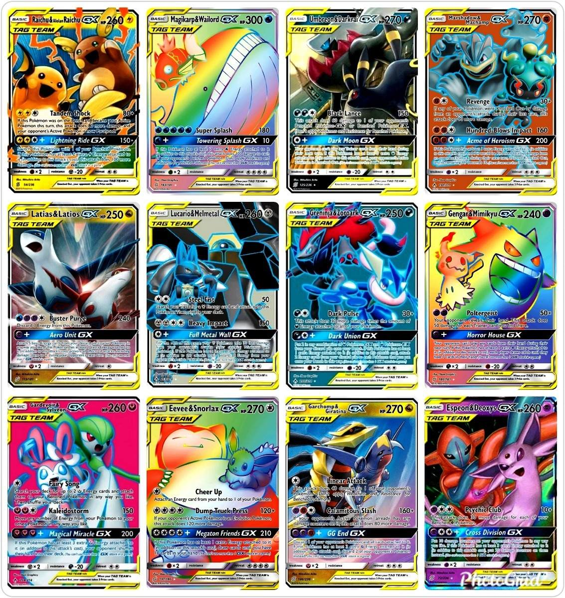

La franquicia Pokémon ofrece una amplia variedad de productos que van más allá de los videojuegos.
Anime y Películas:
La serie de anime Pokémon sigue las aventuras de Ash Ketchum y Pikachu. Además, hay numerosas películas
animadas de Pokémon.
Juegos de Cartas Coleccionables (JCC):
Pokémon Trading Card Game (TCG) es un juego de cartas coleccionables en el que los jugadores construyen mazos
y compiten en batallas utilizando cartas de Pokémon.

Merchandising y Juguetes:
La franquicia produce una amplia gama de productos de mercancía, que incluyen juguetes de peluche, figuras de
acción, ropa, accesorios y más.
Libros y Manga:
Se han publicado varios libros y mangas de Pokémon que exploran historias adicionales o proporcionan
información detallada sobre el mundo Pokémon.
Juegos de Mesa:
Existen juegos de mesa basados en el mundo de Pokémon que ofrecen una experiencia de juego diferente a
los videojuegos.
Ropa y Accesorios:
Una línea de ropa y accesorios de Pokémon, que incluye camisetas, gorras, mochilas y más, está disponible
para los fanáticos de todas las edades.